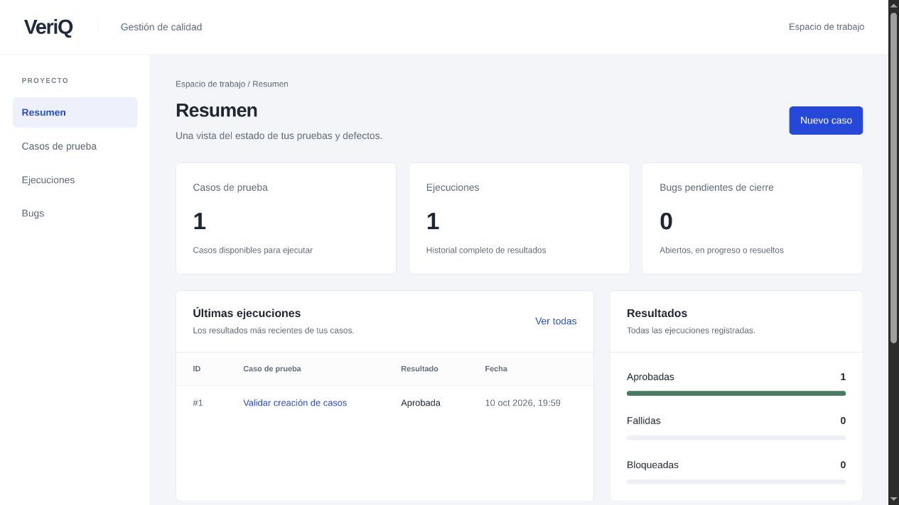

VeriQ
Último proyectoUn espacio para definir qué probar, registrar resultados y seguir defectos hasta su cierre. API con Express, PostgreSQL en Neon y una demo compartida en Cloudflare Workers.
- El reto
- Editar un caso sin perder la evidencia de lo que se probó.
- La decisión
- Guardar una copia del caso en cada ejecución y proteger su historial.
- La evidencia
- 47 pruebas aprobadas y resultados documentados ↗
JavaScriptNode.jsExpressPostgreSQLNeonnode:testCloudflare Workers